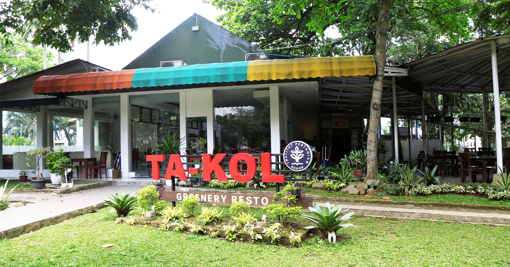
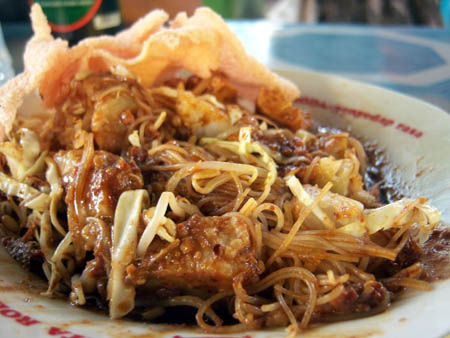

Recommended For You Zidane Ibrahim Fadela Diet keto ternyata mampu mendetoksifikasi penyakit jantung.  Zidane Ibrahim Fadela Diet keto ternyata mampu mendetoksifikasi penyakit jantung. Zidane Ibrahim Fadela Diet keto ternyata mampu mendetoksifikasi penyakit jantung. Zidane Ibrahim Fadela Diet keto ternyata mampu mendetoksifikasi penyakit jantung. 